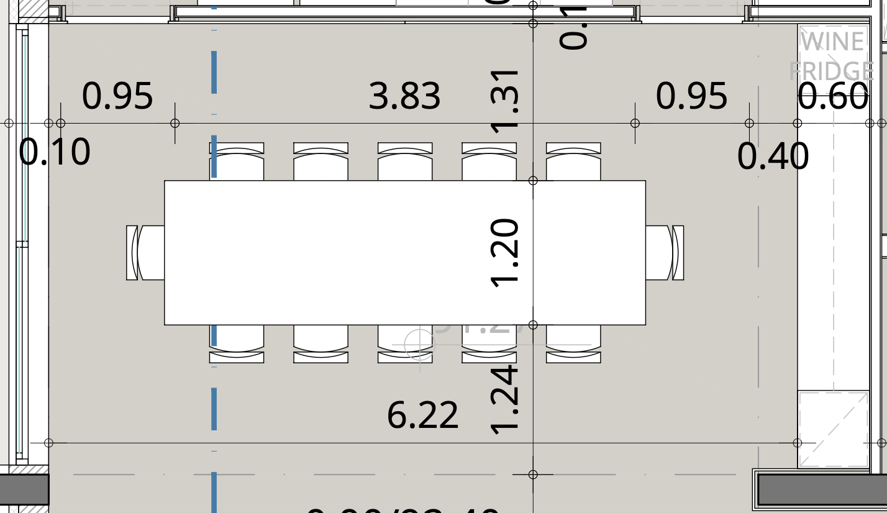

Beyond Showrooms
Marble Top Joinery
19 November 2026
Hi George — I wanted to follow up on your oversized Minotti-style dining table. I know you wanted this made from one block of marble. I rechecked on my latest visit: that isn’t possible in Foshan today for a table about 3.8 m long. That exceeds the largest slab size available to factories here — typically about 3.2–3.3 m.
Existing dining table layout

Examples of slab joinery
When speaking to one of Foshan’s largest luxury stone-table specialist factories, they have emphasized that it is possible to join marble slabs so the joinery isn’t apparent. How seamless or invisible that join will look depends on the marble — its colour and the pattern of the marbling. This may not be possible for every marble type, but for certain types the joinery gap is virtually invisible.
Below are examples I took on my iPhone from the factory showroom floor — tabletops made from two or more pieces of marble. In these videos I’ve tried to point out where the joinery is — as you’ll see, the gap is virtually invisible.